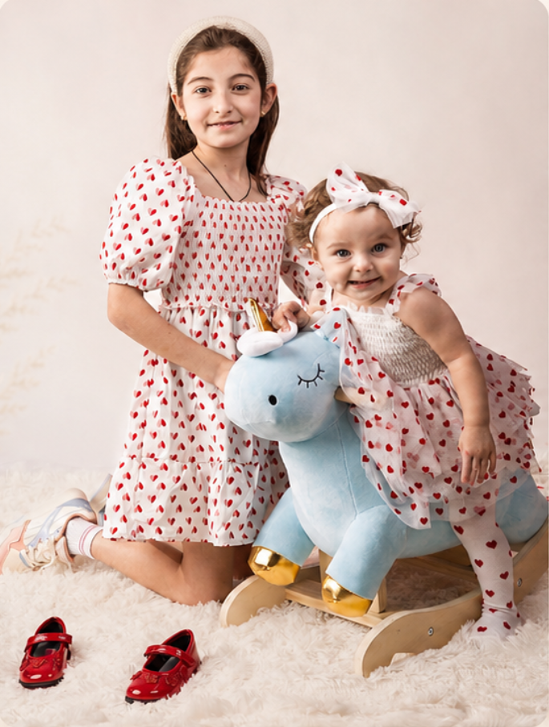

The Beautiful Chaos of Growing Together
From the quiet anticipation of your maternity journey to the joyful, tender sibling bonds of your newborn’s first days, we capture the heart of your growing family.
Book Your Session
Meet Ida
A Passion for Preserving Precious Moments
Hi, I’m Ida, a professional Maternity and Newborn Photographer with over 7 years of experience. Photography is not just my profession — it is something I truly love. Over the years, I have completed professional photography courses and specialized training, continuously developing my skills and creative vision. I believe every client is unique, and I always strive to find an individual approach to each person. I love helping expecting mothers feel beautiful, confident, and comfortable in front of the camera. Working with newborn babies requires patience, gentleness, care, and special attention to every little detail. I always take the time each baby needs, creating a calm and comfortable atmosphere for both the newborn and the parents. My goal is to capture genuine emotions and create beautiful, timeless photographs that families will treasure for years to come. For me, photography is about preserving the most precious moments of your family’s story.

Maternity

Newborn

Cake Smash

6 Month
Kind Words
“Ida was so patient and gentle with our newborn. The photos are absolutely breathtaking. We’ll cherish them forever.”— Jessica L., Newborn Session
“I felt so beautiful and comfortable during my maternity shoot. Ida has a true gift for capturing the magic of pregnancy.”— Emily R., Maternity Session
“The cake smash was so much fun, and the pictures are pure joy! I can’t stop smiling when I look at them.”— Sarah P., Cake Smash